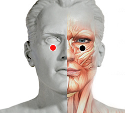

Orf virus
Par
piso orbital - piso orbital

Generalidades:
Trastornos Neurologicos, especialmente oculares y del nervio óptico. Produce Acidez en ojo. Se activa con la luz de la computadora o similares. Fotofobia, Glaucoma. Cuando hay micosis, fiebre, faringitis, diarrea. Impactar pares Braquial y Dorsal 2.
Checar también par de Quiasma.
Transmisión
Por contacto con ganado ovino o caprino. ¿El virus se puede trasmitir por comer carne contaminada? (Bioenergetistas: verificar)